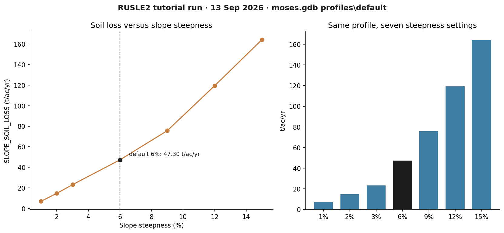
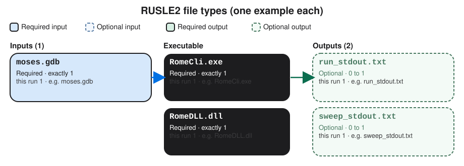

RUSLE2
A first successful headless run of the Revised Universal Soil Loss Equation, Version 2, on Windows. You download the NRCS program and database from NSERL, copy moses.gdb into a fresh folder, call RomeCli.exe, and read SLOPE_SOIL_LOSS. Rusle2.exe is installed; this path uses the RomeDLL science engine.
1. What this model does
RUSLE2 estimates long-term average annual sheet and rill erosion for a hillslope profile. Climate, soil erodibility, slope length and steepness, cover-management, and support practices all enter the calculation. The number you will read first is soil loss A in tons per acre per year. On this host that value is the RomeDLL attribute SLOPE_SOIL_LOSS.
The lab’s pinned engine is RomeDLL.dll called from RomeCli.exe (32-bit .NET). Rusle2.exe in install\NRCS is the Windows GUI and does not run unattended.
2. Get the software
Download the official NRCS RUSLE2 program and the NRCS master database from the National Soil Erosion Research Laboratory data web. ARS keeps a parallel download page at Oxford. The 2022 program release is the one this lab installed. Climate files, crop-management zone templates, and soils sit on the same NSERL site.
On this host the tree is already at C:\Grok\Models\installs\RUSLE2 (installer archive\downloads\RUSLE2.exe, RomeDLL SDK under archive\downloads\romedll-sdk). If you are repeating the lab path, you can skip the download and use that folder.
3. The lab install
Three pieces matter for the first run: the GUI (optional), the science DLL, and a database that already contains a profile.
| Piece | Where | First-run role |
|---|---|---|
RomeCli.exe + RomeDLL.dll |
scripts\RomeCli\bin\Release\net48\ |
Headless engine. RomeCli must be the 32-bit build; copy RomeDLL.dll beside it before the first call. |
| RomeDLL program layout | romedll\ (Binaries, Users, Text, Session) |
Required. RomeInit is told /DirRoot= this folder. |
moses.gdb |
romedll\data\moses.gdb |
ARS example database. Profile profiles\default is the verified case (6% slope). |
BASE_CMZ02.gdb |
romedll\data\ and golden\ |
NRCS CMZ example used in older RITA GETVAR checks. Same default soil-loss number as moses on this host. |
Rusle2.exe |
install\NRCS\ |
Windows GUI. Useful later. Not used for the verified run. |
installs\RUSLE2\golden holds prior RITA CSV output. The verification below used a new copy of moses.gdb, so that golden tree stays untouched. tools\test_all_models.ps1 still calls rusle2_headless.ps1 against the standing romedll tree; the tutorial wrapper below uses a disposable folder.
4. Novice path: run the default moses profile
The example profile is profiles\default in moses.gdb. Default slope steepness is 6%. You will copy the database into a fresh folder and ask RomeCli for SLOPE_SOIL_LOSS. RomeCli’s working directory is the romedll layout, even when the .gdb lives somewhere else.
$root = "C:\Grok\Models\installs\RUSLE2" $run = "$root\tutorial_run_20260913" New-Item -ItemType Directory -Force -Path $run | Out-Null Copy-Item "$root\romedll\data\moses.gdb" "$run\moses.gdb" $cli = "$root\scripts\RomeCli\bin\Release\net48\RomeCli.exe" Copy-Item "C:\Grok\Models\installs\AnnAGNPS\AGNPS\Utility\RITA\Execute\RomeDLL.dll" (Split-Path $cli) -Force & $cli "$root\romedll" "$run\moses.gdb" "profiles\default"
On this host you can instead rerun the lab wrapper, which copies the database, asserts the default number, sweeps seven steepness values, and rewrites the figure:
python C:\Grok\Models\tools\run_rusle2_tutorial_verify.py
Copy the .gdb before you set attributes. RomeCli can write SLOPE_STEEP back into the database. The tutorial wrapper always starts from a fresh copy so romedll\data\moses.gdb stays at 6%.
5. Confirm the run
RomeCli should print two lines and exit 0. On a single-segment profile, SEG_SOIL_LOSS matches SLOPE_SOIL_LOSS.
| Check | Where | This verification (13 Sep 2026) |
|---|---|---|
| Exit code | RomeCli.exe |
0 |
| Default soil loss | SLOPE_SOIL_LOSS at 6% |
47.2971 t/ac/yr |
| Segment soil loss | SEG_SOIL_LOSS |
47.2971 t/ac/yr (same profile) |
| 1% steepness | SLOPE_STEEP=1 |
7.0163 t/ac/yr |
| 15% steepness | SLOPE_STEEP=15 |
164.1922 t/ac/yr |
The automated test is test_tutorial_run inside tools\run_rusle2_tutorial_verify.py. It requires default A equal to 47.2971 t/ac/yr within 0.001, SEG matching SLOPE, the 6% sweep matching that default, and soil loss increasing from 1% to 3% to 6% to 15%. That is the same numeric check as rusle2_headless.ps1 / test_all_models.ps1, pointed at a new working copy rather than the golden RITA folder.
6. This verification’s figure
The 13 Sep 2026 run held climate, soil, cover, and support fixed, then set SLOPE_STEEP to 1, 2, 3, 6, 9, 12, and 15 percent. Soil loss rose from 7.02 t/ac/yr at 1% to 164.19 t/ac/yr at 15%. The default profile (6%) is 47.30 t/ac/yr, marked on both panels.

installs\RUSLE2\tutorial_run_20260913. Left: A versus steepness, default 6% marked. Right: the same seven settings as bars.If you rerun the wrapper, this PNG is rewritten in the run folder and in each tutorial images\ home.
Model Input and Output
Each bubble is one file type. Solid bubbles are required (at least one must be present). Dashed bubbles are optional. Same-type files that only change location or ID are shown once, with how few and how many a run can hold.

Executable
RomeCli.exe
Required. How many: exactly 1. This run: 1. Example: RomeCli.exe.
This is the 32-bit command-line wrapper. One copy. You pass it the RomeDLL folder, the path to moses.gdb, and a profile name. Open the example file in the verification folder to see that layout on disk.
RomeDLL.dll
Required. How many: exactly 1. This run: 1. Example: RomeDLL.dll.
This is the RUSLE2 science engine. One DLL beside RomeCli. Rusle2.exe is only the window; this path never starts the GUI. Open the example file in the verification folder to see that layout on disk.
Input files
moses.gdb
Required. How many: exactly 1. This run: 1. Example: moses.gdb.
This is the NRCS database of climates, soils, and profiles. One database file. Many profiles live inside it; the tutorial uses profiles\default. Open the example file in the verification folder to see that layout on disk.
Output files
run_stdout.txt
Optional. How many: 0 to 1. This run: 1. Example: run_stdout.txt.
This is console text from the default-profile call. One file. It must contain SLOPE_SOIL_LOSS, average annual A in tons per acre per year. Open the example file in the verification folder to see that layout on disk.
sweep_stdout.txt
Optional. How many: 0 to 1. This run: 1. Example: sweep_stdout.txt.
This is console text from the slope-steepness sweep. One file. Each SLOPE_SOIL_LOSS after a steepness change feeds the plot. Open the example file in the verification folder to see that layout on disk.
7. After the first success
Once RomeCli prints that number, you can set other profile attributes the same way (SLOPE_HORIZ for length, management pointers, and so on) or open the same database in the GUI. Building a new NRCS field office profile is a different lesson. This one stops at a verified headless soil-loss run.